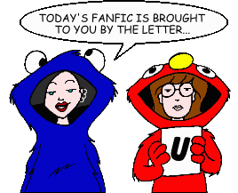
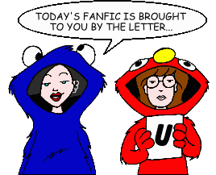

Fan Fiction
"U" by Author

Fan Fiction
"U" by Author

|
Authors: If you no longer wish for any of your stories to be posted, please send e-mail to fanfic@lawndale.net and I will remove them at once. |
| The UAWCPM (uawcpm@netzero.net) |
| Friends Are So Alarming Category: Miscellaneous Sandi communicates a shocking revelation to Quinn, who must then decide what to do about it. |
| Um (um_er_uh@hotmail.com) |
| Requiem for a Lightweight Category: Miscellaneous Daria just isn't her old self, at a loss upon finding the world suddenly less sick and sad. |
| The Unknown (screw.you@gurlmail.com) |
| Are You That Guy? Category: Romance Follow-up to "Jane's Crisis." Five months after the attack on Jane, Joanna throws a huge party. Will Jane come, and will she click with a certain guy (and it's not Jesse)? |
| Brassed Off Category: School Situations It's "Music in Our Schools Month," and various students are forced to take a music course for the big concert. |
| Daria Gets Whacked Category: Sci-Fi, Fantasy & Horror Daria and Jane fall through a porthole into Wuffo High, home of the characters in the author's comic strip "The Wackies." |
| Forgive Me, Please Category: Romance Follow-up to "Are You That Guy?" Three years after the attack, Jane and Brandon get intimate, while Evan is released from prison with one thing on his mind... |
| Jane's Crisis Category: Miscellaneous When Jane is attacked, the cast must deal with feelings of sadness and hatred. A new character is introduced that helps Jane through the ordeal. |
| Little Sister Category: Miscellaneous See Trent when he was five. See his screwed up family. See when Jane was born. Most importantly, see a ripoff from "The Simpsons." |
| What She Deserved? [Artwork] Category: Miscellaneous After she becomes a victim of rape herself, Sandi is forced to think about how she's been behaving. But when she learns she's paying a deadly price for the assault, and the police won't do a thing to help, Joanna takes the law into her own hands. |